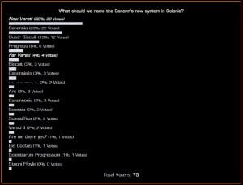

In January 3303, Canonn members voted on the name they would like for the System that would be granted to Canonn in Colonia near Jacques station following the successful CG. In the end, Frontier granted the 2nd choice, even though locally the Canonnia is known as New Varati.
The results were as follows:
